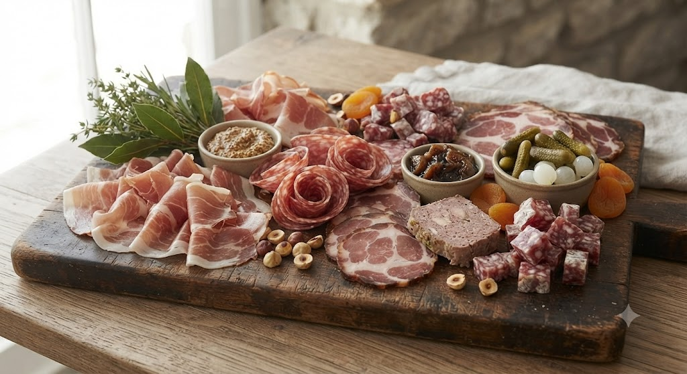
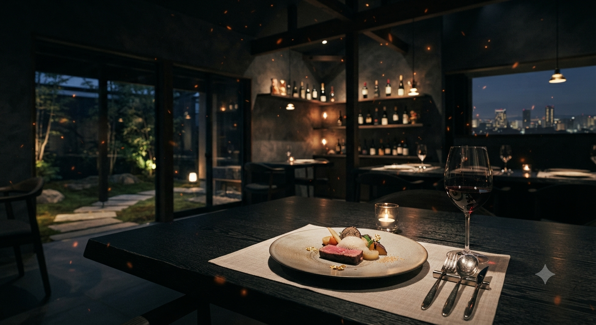
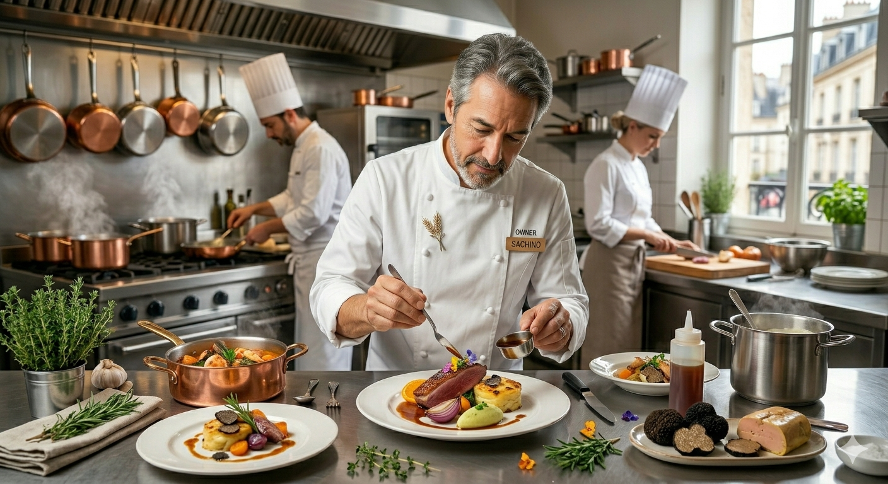

大人のための、気取らない美食空間
昨年12月グランドオープン。地元宮城の「いばり仔羊」や「放牧羊」をワインと共に。
お席の空き状況を確認
低温火入れの田舎風パテなど、シェフの職人技が光る肉加工品。
シャルドネから赤星ビールまで、料理を引き立てる贅沢な一杯。

鹿の剥製が並ぶ西洋の館。20席の心地よい空間で贅沢なひとときを。

秋田県出身. 都内や仙台の名店で修行を積み、2016年に独立. 「美味しいのは当たり前、それ以上に楽しい時間」という想いから、気さくな会話と本格的なフランス料理を融合させた唯一無二のスタイルを追求しています.
いばり仔羊、放牧羊、季節のジビエ。シェフ自ら厳選した素材の旨味を、最適な火入れで最大限に引き出します。
「本格フレンチは緊張する」という概念を覆す、明るい接客と賑やかな雰囲気。お一人様から女子会まで幅広く愛されています。
「お店の美味しいシャルキュトリを自宅でもワインと合わせたい」「大切な方への特別なお祝いに贈りたい」という多くのお客様の声にお応えし、レガリテのクラフトマンシップをご自宅にお届けする新プロジェクトが進行中。
シェフ自慢の「低温火入れの田舎風パテ」や宮城の「いばり仔羊」を使用した自家製シャルキュトリ、季節のテリーヌなどをベストな状態のまま真空パックでお届け。 さらに、ソムリエでもあるシェフが「一皿の旨味を最大限に引き出す王道ワイン」をセレクトし、ペアリングセットとしてお届けします。 定期縛りはなく、1回のみの気軽なご注文が可能です。ご自宅での特別な日のディナーはもちろん、大切な方への特別なギフトやお中元・お歳暮にも最適です。
リリース・先行案内のお知らせ
開始時期の決定や、お得な初回限定クーポン付きの先行予約受付は、公式Instagramにてどこよりも早く発表いたします。どうぞ楽しみにお待ちください！
「鴨肉の火入れも完璧です。1人にも関わらず気さくに接して頂き最高の時間を過ごしました。」
30代・男性「羊肉の焼き方が絶品！秋刀魚と秋ナスのテリーヌが最高でした。ワインも豊富で大満足。」
40代・女性少人数制（20席）のため、事前のご予約をおすすめいたします。
〒980-0014
宮城県仙台市青葉区本町２丁目９−２ エンドウビル
広瀬通駅から徒歩圏内（本町商店街内）
20席（カウンター・テーブル席）
貸切・テイクアウト相談可